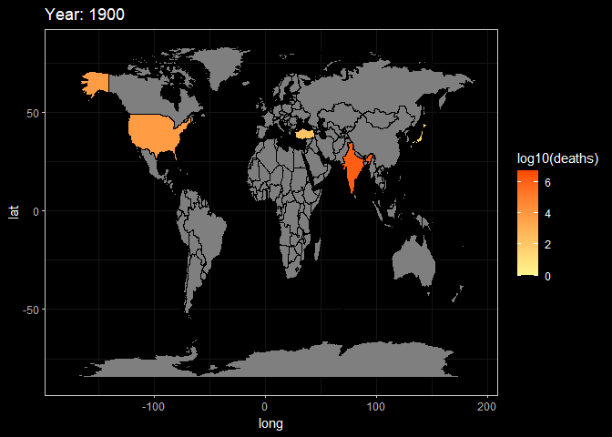

Chapter 6 Interactive component
disaster = read.csv('data/disaster.csv') %>%
select(-X)
mapdata = read.csv('data/Location.csv') %>%
select(-X)disaster_raw = disaster %>%
group_by(Year,Country) %>%
summarize(deaths = sum(Total.Deaths, na.rm = T),
damage = sum(Total.Damages, na.rm = T),
damageadj = sum(Total.Damages.Adjusted, na.rm = T)) %>%
unique()## `summarise()` has grouped output by 'Year'. You can override using the
## `.groups` argument.country = sort(unique(mapdata$Country))
data = data.frame(Year = as.character(rep(seq(1900,2022), each = length(country))), Country = rep(country, 123))
data$Year = as.numeric(data$Year)
data1 = data %>% left_join(disaster_raw)## Joining, by = c("Year", "Country")data1[is.na(data1)] = 0
rawdata = left_join(mapdata,data1,by=c("Country" = "Country"))
rawdata$Year = as.numeric(rawdata$Year)g2 = ggplot(rawdata, aes(x = long, y = lat, group = group))+
# the same as the setting with summary plot
geom_polygon(aes(fill = log10(deaths)), color = 'black')+
transition_manual(frames = Year) +
# use year as the animation parameter
scale_fill_gradient(low = '#FFF68F',high = '#FC4902') +
labs(title = paste('Year:','{current_frame}')) +
# make the title changes among different plot
ggdark::dark_theme_bw()## Inverted geom defaults of fill and color/colour.
## To change them back, use invert_geom_defaults().animate(g2,fps = 3)
g3 = ggplot(rawdata, aes(x = long, y = lat, group = group))+
# the same as the setting with summary plot
geom_polygon(aes(fill = log10(damageadj)), color = 'black')+
transition_manual(frames = Year) +
# use year as the animation parameter
scale_fill_gradient(low = '#FFF68F',high = '#FC4902') +
labs(title = paste('Year:','{current_frame}')) +
# make the title changes among different plot
ggdark::dark_theme_bw()
animate(g3,fps = 3)